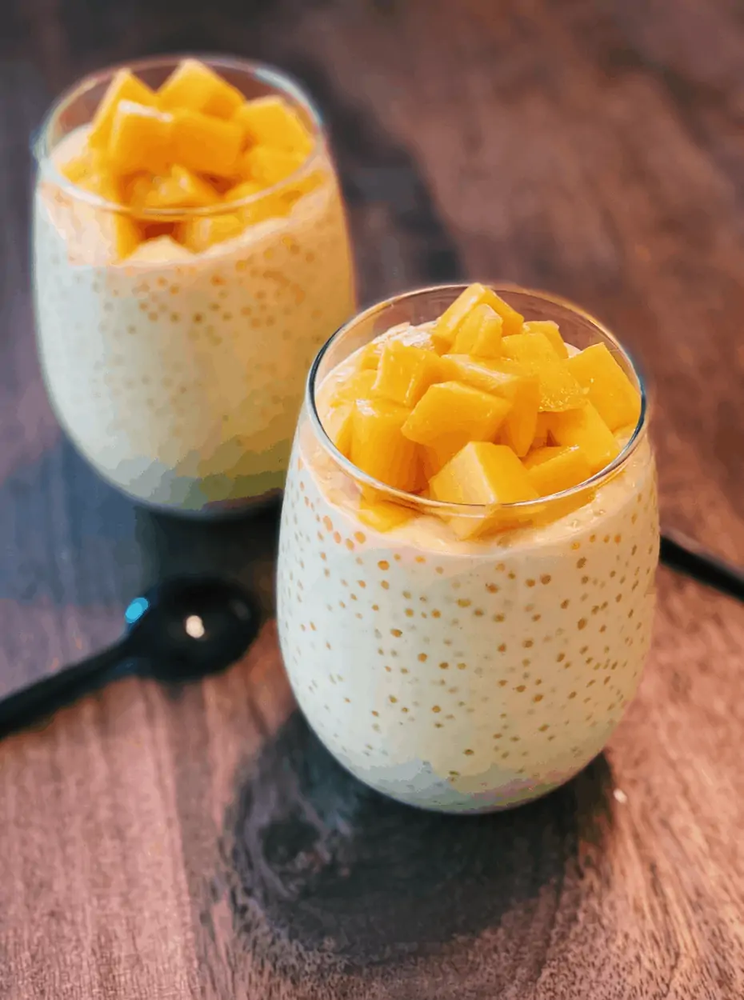

Mango Cream Pie Recipe
Ingredients:
- 1/2 cup small tapioca pearls
- 2 ripe mangoes (diced)
- 2 cups coconut milk
- 1/4 cup condensed milk (adjust to taste)
- 2 tbsp sugar (optional)
- 1/2 tsp vanilla extract
- Ice cubes (optional, for serving)
Instructions:
- Cook Tapioca: Boil water, add tapioca pearls, and cook until translucent (10-15 min). Drain and rinse under cold water.
- Prepare Base: In a bowl, mix coconut milk, condensed milk, sugar, and vanilla. Stir well.
- Combine: Add cooked tapioca and diced mangoes to the mixture. Stir and chill for at least 30 min.